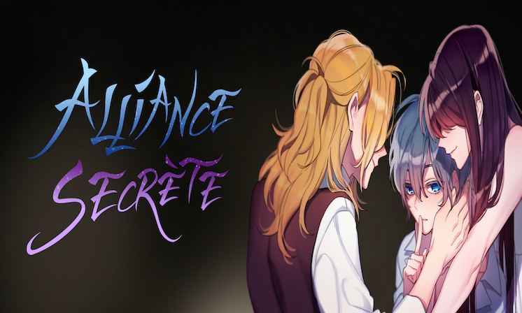
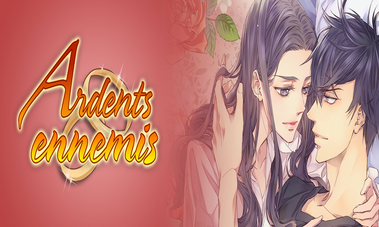
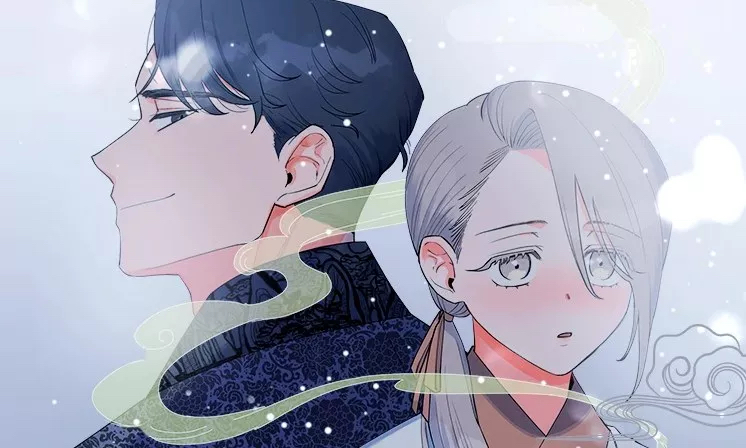
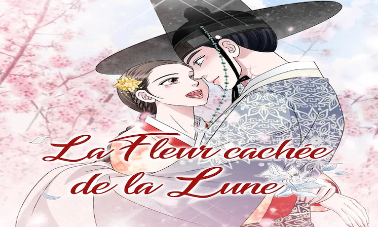
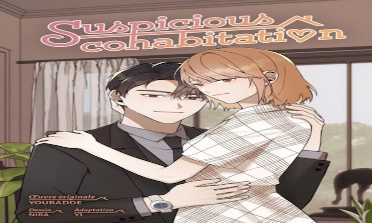

Alliance Secrète시크릿 동맹TerminéeMystère, Romance, Drame
Épisodes traduits : 1 à 45
Total des épisodes : 45
Pour Delitoon
À lire sur :
Lezhin FROnoVous êtes à moi M. parfait !훈남님 제가 꼬셔보겠습니다TerminéeRomance, Historique, Isekai
Épisodes traduits : 1 à 83
Total des épisodes : 83
Pour Delitoon
À lire sur :
Lezhin FRArdents Ennemies뜨거운 웬수TerminéeRomance
Épisodes traduits : 1 à 60
Total des épisodes : 60
Pour Delitoon
À lire sur :
Lezhin FROnoPiégée dans un mariage frauduleux !이건 명백한 사기결혼이다TerminéeFantastique, Isekai, Romance
Épisodes traduits : 1 à 107
Total des épisodes : 107
Pour Delitoon
À lire sur :
Lezhin FRLe retour de la légende하늘의 이야기En coursAction, Fantastique, Isekai
Épisodes traduits : 1 à 57
Total des épisodes : 168+
Pour Delitoon
À lire sur :
Lezhin FROnoOui, mon maître !독주TerminéeHistorique, Romance, Adult (18+)
Épisodes traduits : 1 à 38
Total des épisodes : 38
Pour Delitoon
À lire sur :
Lezhin FRLa Fleur cachée de la lune폐월화 : 야수의 꽃TerminéeFantastique, Historique, Romance
Épisodes traduits : 1 à 29
Total des épisodes : 126
Pour Delitoon
À lire sur :
Lezhin FR
Studio Charon
Les correspondances de Charlotte샬롯의 편지TerminéeRomance, Mystère
Épisodes traduits : 30 à 80
Total des épisodes : 80
Pour Studio Charon
À lire sur :
VerytoonOno
Verytoon
Comme tout le monde !평범해지고 싶어TerminéeSlice of Life, Action, Romande
Épisodes traduits : 1 à 100
Total des épisodes : 100
Pour Verytoon
À lire sur :
VerytoonThe Man of Christmas크리스마스의 남자TerminéeRomance, Comédie
Épisodes traduits : 1 à 89
Total des épisodes : 89
Pour Verytoon
À lire sur :
Verytoon
Piccoma
Suspicious Cohabitation수상한 동거TerminéeSlice of Life, Romance
Épisodes traduits : 1 à 55
Total des épisodes : 55
Pour Piccoma
À lire sur :
Piccoma